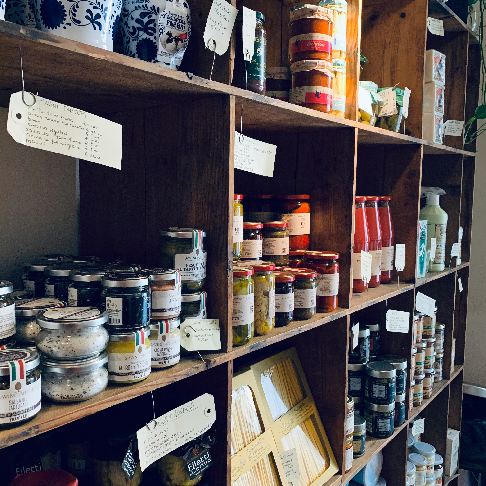

Stock Your Pantry
You do not need a fancy kitchen to start!
A few basic tools and ingredients will cover most beginner recipes. Start small and add more as you go.
This page also shares simple ingredient swaps for common allergies and for days when you run out of something.

The Basics
Must-Have Tools
- Measuring cups and spoons
- Mixing bowls
- Whisk and rubber spatula
- Baking sheet
- Loaf pan or square pan
Dry Ingredients
- All-purpose flour
- White and brown sugar
- Baking soda
- Baking powder
- Salt
Wet Ingredients
- Eggs
- Butter
- Milk
- Vegetable oil
- Vanilla extract
Easy Ingredient Swaps
No Eggs?
For each egg, mix 1 tablespoon of ground flaxseed with 3 tablespoons of water. Let it sit for 5 minutes until it gets thick. You can also use 1/4 cup of applesauce.
No Dairy Milk?
Oat milk, soy milk, or almond milk can replace dairy milk in the same amount. Oat milk is a good choice for people with nut allergies.
No Buttermilk?
Add 1 tablespoon of lemon juice or white vinegar to 1 cup of milk. Stir and let it sit for 5 minutes before using.